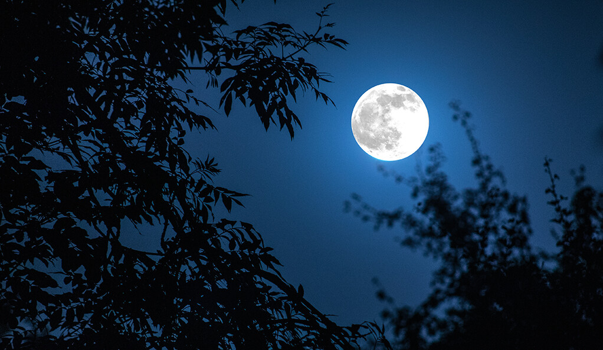

A Little About Vance the Cleric:

Name: Vance, Cleric of Solinari
Biography:
- Vance is a cleric of Solinari, the Krynn god of knowledge and white magic.
- He is from Solamnia but followed his childhood friend, Suri, to the demi plane of Barovia.
- Once in Barovia, he found out that Suri was dead, and has taken up with her adventuring companions.
- He’s hoping to bring Solinari’s light to this plane. With knowledge, anyone can banish fear.
Vance Likes:
- Reading
- Talking with people
- animals
He dislikes:
- Horses
- Children
- Borscht